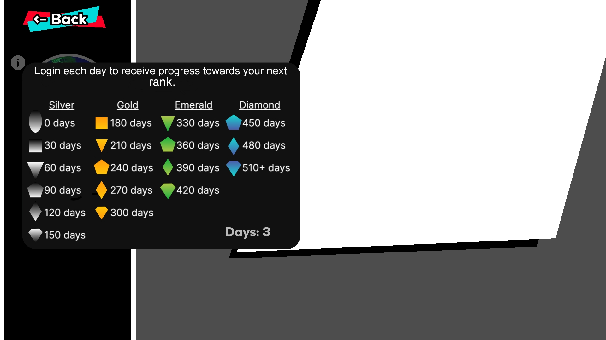
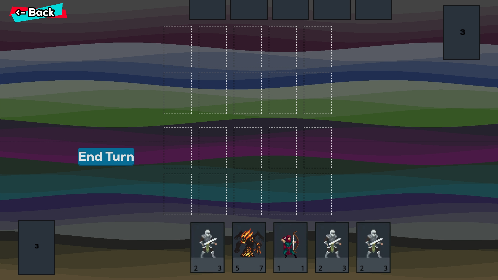
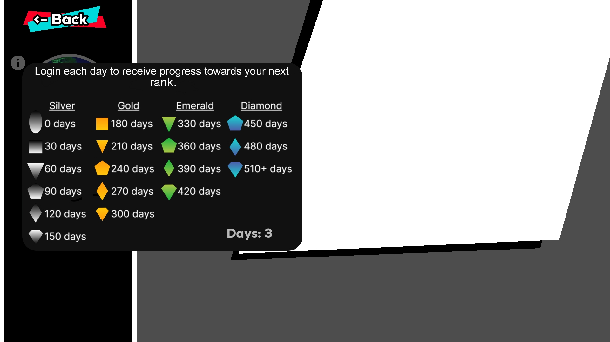
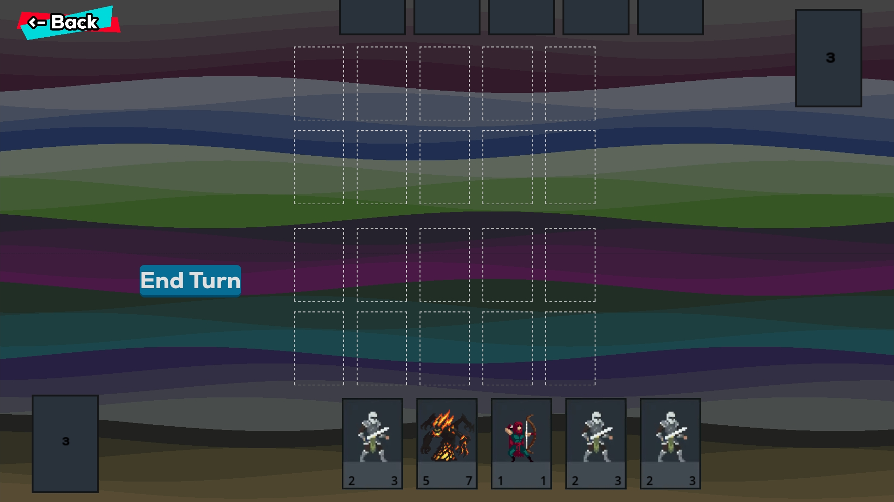

App 1: Genesis
 



Genesis é um jogo de cartas baseado em turnos que combina estratégia, habilidade e criatividade. Os jogadores constroem seus baralhos personalizados e enfrentam adversários em batalhas táticas, onde cada decisão conta.
Mecânica única: Utilize cartas de ataque, defesa e habilidades especiais para dominar o campo de batalha.
Construção de Baralhos: Personalize sua estratégia escolhendo entre diversas cartas com poderes únicos.
Modos de Jogo: Enfrente oponentes em partidas solo, multiplayer online ou desafie a IA em uma campanha emocionante.
Arte Imersiva: Gráficos vibrantes e uma trilha sonora envolvente criam uma experiência memorável.
Prepare-se para testar sua inteligência e superar seus rivais no mundo fascinante de Genesis!
Ver na Play Store